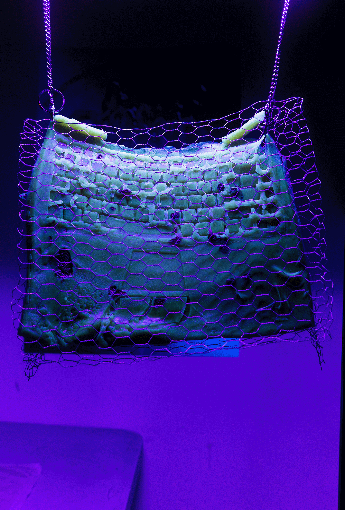
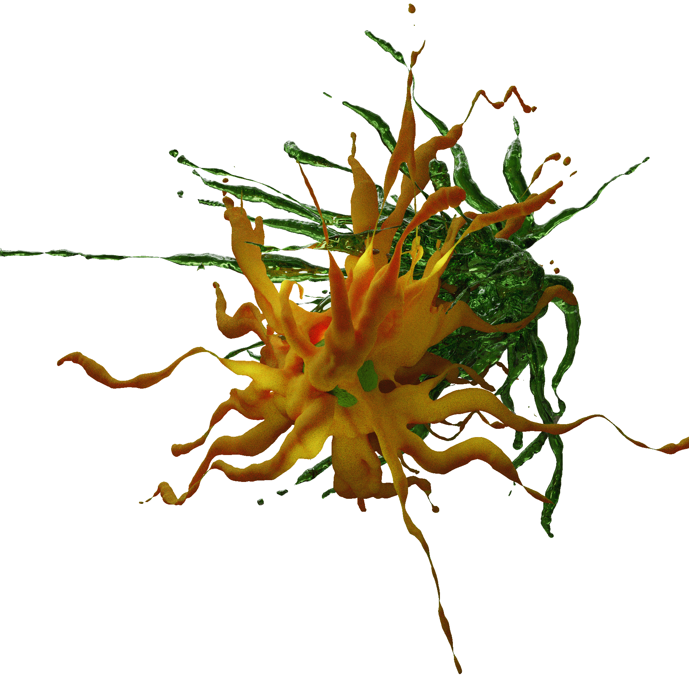
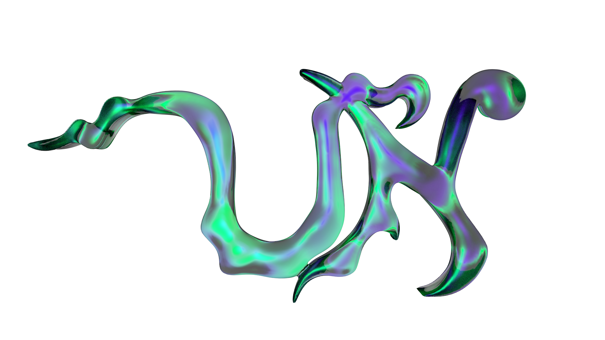
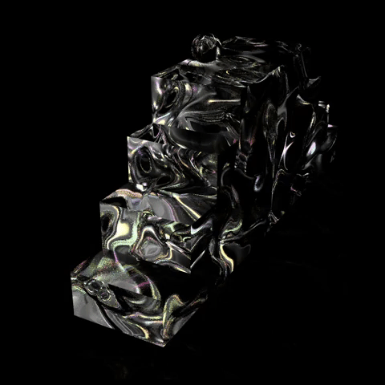

x
 images courtesy of mia meus
images courtesy of mia meus


How to Begin Again
project overview
How to Begin Again: An Initiation Towards Unitary Urbanism, was an installation designed for the 2021 Venice Biennale of Architecture in collaboration with Cohabitation Strategies, a non-profit cooperative for socio-spatial research, design and development that facilitates urban intervention projects in cities across Europe, South and North America. It responded to the theme, "How Will We Live Together", by offering it's audience provocations for radical reconstruction of cities to better serve the interests of it's constituents. The instillation serves as a call to action, for citizens and communities to reclaim urban space from the clutches of capitalism and it’s most greedy players; to create cities that are more socially, economically, and environmentally just.
role:
3D illustration, layout
tools
cinema 4d, illustrator, photoshop
collaborators:
Cohabitation Strategies, Mia Meus, Jill Shah
"The constant exploitation of urban communities and the planet enables the current state of urbanization. It is capitalism’s tendency to pursue what Marx called “the enforced destruction of a mass of productive forces” via the contemporary processes of urbanization and its devastating consequences to communities, cultures, and the environment. Yet there are forces that contrast this tendency and are building daily an alternative that has an impact at a local scale. How To Begin Again is a four-step initiation to a new awareness of the possibilities of building environmentally and socially just cities."
I worked closely with Cohabitation Strategies to develop a visual language woven through out the exhibition. My main focus of the project was to design a large interconnected diagram, abundant with 3D illustrations, which are designed to appear as though floating on top of a three layered panel, connected by Debordian-esque arrows. Each layer is representative of how commodities flow throughout cities. The diagram acts as a summary and present day response to Marxist theorization of commodity.
Inspired by the Russian Constructivist movement, we wanted these digital renderings to feel somewhat like a handmade collage. I created textures using traditional art materials such as willow charcoal and gouche paint. I mapped these textures onto 3D forms I made in Cinema 4D.
At the bottom, is the production of urban commodities. This is where unseen labor toils away in factories, on farms, and in vehicles of transit. It is also where much unseen explotation occurs, to laborers, the environment, and people living in communities most directly affected by the environmental tolls of production and distribution of commodities.
In the middle is where most working class city dwellers see themselves, amongst public urban infrastructure, private property and cultural institutions. It represents the realization of values of urban commodities. Capitalist exploitation at this level is perhaps the most visible because it is the most widely felt. Within this layer, the most questions about universal basic needs, such as food, shelter, and public space are posed for participants seeking to become unitary urbanists.
And finally, in the top layer of the diagram we see the distribution of surplus value. This is where financial and government institutions sit comfortably. The diagram asks us to imagine how this layer might look different with civic imagination for grassroots organization and a redistribution of wealth and power.
x
 installation view from First Instar showcase courtesy of Daisy Kim.
installation view from First Instar showcase courtesy of Daisy Kim.


Spawn
project overview:
spawn is a series of design experiments which imagine a shift in visual culture, made possible by a restructuring of economic practices. This project asks audiences to imagine how societal values might transform if seeds were the main form of currency and value could only be yielded through caring for the earth. In this speculative universe, seeds produce renewable bio-technology, which depends on stewardship and inter-species collaboration in order to function properly. A theme of hand drawn organic typography emerged within this project, as a way of reflecting the importance of slowness within egalitarian societies.
project type:
type design, print design, 3D design, digital fabrication
tools:
blender, illustrator, risograph, fabric plotter, inkjet plotter, uv printer, laser cutter, cnc machine, 3D printer
installation view from First Instar showcase courtesy of Daisy Kim.

Botan is a speculative universe in which a society of humans cohabit and collaborate with nature and other living organisms on the Planet Earth. Botan exists in a not so distant future, where the ecological impacts of the global economy have reached such extremes that they can no longer be ignored. Due to the dangerous and irreparable effects of mining materials from the earth, the production of computers fabricated from nonrenewable resources has halted. These devices have been repurposed and absorbed within society as vessels for biological growth and energy harvesting. Increased scientific inquiry, research, and innovation have made it possible to begin to cultivate bio-material and renewable energy on a mass scale in the production of the modern personal computer.

spawn is a generative currency with societal stipulations as to how value is accumulated and passed from one hand to another. At the beginning of their exchange cycle, spawn resembles seeds. The value each seed produces is dependent on the shareholder’s ability to properly tend to the land in which the seed is planted. spawn develop into microorganisms, plants, and fungi, which mature into intelligent life forms.
In exchange for continued nurturing and protection, spawn offer natural resources, which contribute not only in the production of sustenance and architecture, but also in the creation of analog computational devices. The output of these machines are variable relative to the input of environmental conditions and as impacted by the occupation of humans. Contrary to its predecessors, the modern computers of Botan are composed of living materials that can decompose and regenerate. Members of the Botan society share a responsibility to steward the land, for without this nurturing and attention, computers would cease to function or exist in service of humans, resulting in the ultimate collapse of the economy.
This project emerged in response reading David Graber's essay, Fragments of an Anarchist Anthropology. I developed this work within a class called Designed Realities, taught by acclaimed speculative designers, Anthony Dunne and Fiona Raby. Inspired by reading CAPS LOCK, by Ruben Pater, I considered how societal values are often inscribed in the design of currencies. Following Graeber's line of thinking on egalitarian, anarchist societies, I thought about how seeds as currency might impact communal organization and how value is accumlated and shared. After exploring the currency design of this speculative narrative, I expanded on world building by imagining what might emerge from the seeds that made them so valuable to this society. Looking to our modern world for inspiration, I contemplated how intergral technology is in the global economy and how the advancement of technology and the destruction of nature are parallel forces. I decided to explore how modern technology might look and feel different if it's functionality depended on human ability to care for the earth. I did this attempting to create something recognizable as a computer out of biological materials.
Initially, I had the idea to try and grow a computer out of mycellium. I obtained a no longer functioning laptop on craigslist for $10, which I used to make a silicon skin mold. After purchasing the silicon I realized it would be way more within the ethos of the project if I used sustainable mold making materials instead. I discovered sculptor, Emily Blythe Jones' research on sustainable mold making and began experimentng with gelatin and agar. Instead of disposing of the laptop, I repurposed the e-waste, growing cress seeds in between the keys and on the disc drive. I filmed the seeds growing in a time laspe using a webcam and a raspberry pi, which I had set up during an installation, along with an rfid reader, which would activate the timelapse when the hourglass card I created was scanned.
x


black beyond
project overview:
black beyond is a multi-dimensional platform created to promote and uplift Black creatives and Black radical thought. It is a collection of programming that spans across sight, sound and world-building. black beyond is curated and was founded by Jaszalyn, a Black femme designer & creative technologist. I was brought on to the black beyond team as an ally and 3D motion designer, to help promote online events.
role:
3D animator, web developer & design
tools
cinema 4D, aftereffects,illustrator, html, css, js
collaborators:
jazsalyn, Livia Foldes,Shameekia Johnson, Ege Uz, Gabe Deko, Kevin Cadena, sammie veeler, Avery Youngblood
links
Collaborating with black beyond is often full of fast paced exchanges. We collect a lot of ethereal nature inspiration for are.na moodboards. Jaszalyn’s visions often lead to the genesis of lush otherworldly landscapes, reminiscent of Octavia Butler scenes. We focus heavily on crafting surreal biological textures from a parallel utopia.
x


From The Rupture
project overview
From the Rupture was a virtual festival to showcase Eyebeam’s Rapid Response fellowship projects. I designed a minimal environment with simple 3D icons that act as avatars for the interactive online environment. The sprites illicit nostalgia for early text adventure computer games. I designed the promotional materials for the festival’s online events, as well as an RSVP landing page. Each orb in the main logo represents a sister planet and project space with the digital festival grounds.
role
3D design, animation, UX design
tools
cinema 4d, aftereffects, html,css,js
x



undocumenta
project overview
undocumenta was an open call for artworks displayed as guerilla projections at Documenta 15 in Kassel, Germany. This open call asked for artist and non-artists from around the world to share their stories relating to global immigration and the current refugee crisis.
role
3D design, web development, creative direction
tools
blender, three.js aftereffects, html,css,js
x


Invisible Art Handler
project overview
Invisible Art Handler was a web AR experience developed in collaboration with Clynton Lowry for In Support, which was on view at The Kitchen. Lowry is the founder of Art Handler Magazine. I scanned objects used by actual art handler’s working at The Kitchen and developed a website which allowed gallery goers to step into the shoes of the art handler.
role
3D Scanning, AR Web Development
tools
Blender, Polycam, Google Model Viewer, Illustrator
x


project overview
Telepresence was an end of the year group showcase for first year students in the Parsons MFA Design & Technology program. Telepresence imagines ways to feel connected through computer screens and across time-zones. The pandemic necessitated a shift to a virtual venue, and we were tasked with creating a cyber exhibition that still felt participatory. I designed and animated all of the 3D assets to represent different themes of student work, which were used on the site and to promote the show on social media.
role
3D design, animation
tools
cinema 4D, aftereffects, illustrator
telepresence
